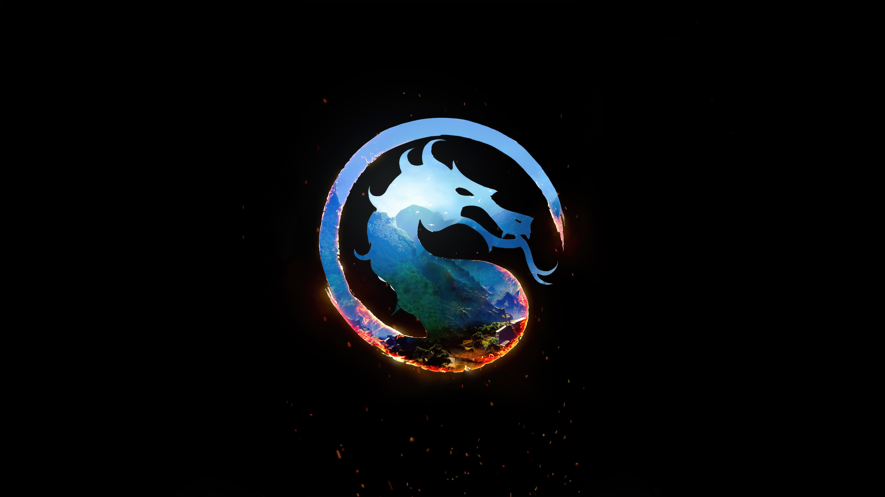

liu kang dios del fuego
Liu Kang ahora convertido en Dios, use el poder del Reloj de Arena para crear una
tercera línea temporal en donde Liu Kang es ahora el protector del Reino de la Tierra donde
todos vivirian en paz pero esa paz ahora es amenazada por un enemigo que liu kang nunca hubiera
anticipado se necesitara de todo su sabiduria y experiencia no solo para salvar el mundo sino el
universo entero
Clan: Ninguno
Raza: Dios
Sexo: Masculino
Lugar: China
reino: earthrealm
alineacion: bien
Estilo de Pelea: Jeet Kune Do, Choy Lay Fut, Monkey, Dragon Kung Fu

sub zero el gran maestro de los lin kuel
conocido con el gran maestro de los lin kuel sub zero lidera su antiguo clan de guerrero
defensores de la tierra contra amenazas extremas esta a sido su tarea durante siglos pero
la tierra no a sido amenazada durante siglos y sub zero no ve la necesidad de limitar a su
a defender una amenaza que posiblemente nunca valla a suceder bajo su liderasgo los li kuel
saldran de las sombras y lucharan para ser una de la naciones mas grandes de la tierra
Clan: lin kuel
Raza: humano, Cryomancer
Sexo: Masculino
Lugar: China
reino: earthrealm
alineacion: bien
Estilo de Pelea: Shotokan, Dragón, Cryomancer, Unbreakable, Grandmaster

kenshi takahashi reivindicador del nombre de su familia
siendo uno de las familias mas honorables de japon en el pasado los takahashi fueron diezmados
en las batallas lo perdieron todo incluido el simbolo de su poder la venerada espada sento quienes
sobrevivieron se unieron a los bakuto predecesores delos yakuza para recibir proteccion
con siglos despues kenshi crecio escuchando las historias de su familia y debido al odio hacia los
yakuza kenshi año liberar a su familia de sus garras y establecer el nombre de su familia pero primero
kenshi debe probar su liderasgo y recuperar la espada sento
Clan: takahashi
Raza: humano
Sexo: Masculino
Lugar: japon
reino: earthrealm
alineacion: bien
Estilo de Pelea: San Shou
kenshi princesa del mundo exterior
siendo uno de las familias mas honorables de japon en el pasado los takahashi fueron diezmados
en las batallas lo perdieron todo incluido el simbolo de su poder la venerada espada sento quienes
sobrevivieron se unieron a los bakuto predecesores delos yakuza para recibir proteccion
con siglos despues kenshi crecio escuchando las historias de su familia y debido al odio hacia los
yakuza kenshi año liberar a su familia de sus garras y establecer el nombre de su familia pero primero
kenshi debe probar su liderasgo y recuperar la espada sento
Clan: Ninguno
Raza: edenian
Sexo: femenino
Lugar: edenia
reino: outworld
alineacion: bien
Estilo de Pelea: Ba Gua

